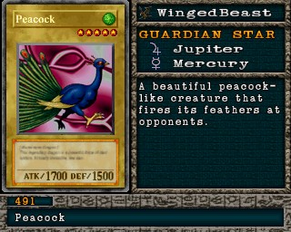

#491 · Monstro
Peacock
ATK1700
DEF1500
Nível5
TipoBesta Alada
AtributoWind
Guardian StarsJúpiter / Mercúrio
Senha20624263
Star Chips260
Quem dropa no Mod 13
| Duelista | Rank | Chance | Média | |
|---|---|---|---|---|
| B/C/D | 2,83% 58/2048 | 1 em 35 duelos | ||
| S/A-POW | 2,69% 55/2048 | 1 em 37 duelos | ||
| B/C/D | 1,90% 39/2048 | 1 em 53 duelos | ||
| B/C/D | 1,61% 33/2048 | 1 em 62 duelos | ||
| S/A-POW | 1,56% 32/2048 | 1 em 64 duelos | ||
| B/C/D | 1,27% 26/2048 | 1 em 79 duelos | ||
| S/A-POW | 1,22% 25/2048 | 1 em 82 duelos | ||
| S/A-POW | 1,17% 24/2048 | 1 em 85 duelos | ||
| S/A-TEC | 1,17% 24/2048 | 1 em 85 duelos | ||
| S/A-POW | 1,07% 22/2048 | 1 em 93 duelos | ||
| S/A-TEC | 1,07% 22/2048 | 1 em 93 duelos | ||
| B/C/D | 1,07% 22/2048 | 1 em 93 duelos |
Quem dropa no jogo original
| Duelista | Rank | Chance | Média | |
|---|---|---|---|---|
| B/C/D | 2,83% 58/2048 | 1 em 35 duelos | ||
| S/A-POW | 2,69% 55/2048 | 1 em 37 duelos | ||
| B/C/D | 1,90% 39/2048 | 1 em 53 duelos | ||
| B/C/D | 1,61% 33/2048 | 1 em 62 duelos | ||
| S/A-POW | 1,56% 32/2048 | 1 em 64 duelos | ||
| B/C/D | 1,27% 26/2048 | 1 em 79 duelos | ||
| S/A-POW | 1,22% 25/2048 | 1 em 82 duelos | ||
| S/A-POW | 1,17% 24/2048 | 1 em 85 duelos | ||
| S/A-TEC | 1,17% 24/2048 | 1 em 85 duelos | ||
| S/A-POW | 1,07% 22/2048 | 1 em 93 duelos | ||
| S/A-TEC | 1,07% 22/2048 | 1 em 93 duelos | ||
| B/C/D | 1,07% 22/2048 | 1 em 93 duelos |
A chance vale por duelo vencido com o rank indicado. "1 em N" é a média de duelos para conseguir a carta. S/A-POW = vitória por força; S/A-TEC = vitória técnica; B/C/D = ranks baixos.